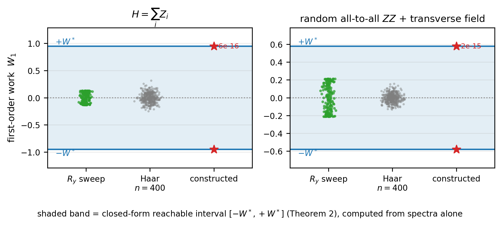

Theorem 1, Corollary 1, the tensor-structure lemma, and the symmetry half of Theorem 2 are machine-checked in Lean 4 against Mathlib, with no sorry.
Abstract
A common route to ground-state preparation couples a system to one ancilla qubit, applies a conditional feedback operation, and resets the ancilla. I ask what physical quantity governs the energy such a cycle exchanges. The answer is a commutator, not the correlation the ancilla acquires. The energy change per cycle is exactly $W = \langleΨ_1| A - U^\dagger A U |Ψ_1\rangle$ with $A = I_A \otimes H$, for every feedback strength and every sensing time, and it vanishes identically whenever the feedback generator commutes with $H$. No function of the system-ancilla correlation can therefore determine the work: on an explicit one-parameter family the mutual information and the logarithmic negativity are invariant to $2\times10^{-15}$ while the work varies continuously and changes sign. At fixed correlation the reachable work is a closed-form interval, and to leading order in the feedback strength it is symmetric about zero, so an unfiltered conditional kick heats as readily as it cools. That symmetry is exactly one orthogonality condition on the two spectra, and the two sufficient conditions I identify are its degenerate solutions, one holding automatically whenever the post-sensing branch is pure. At that order no choice of generator repairs a protocol that starts pure, and no choice of state repairs one with a symmetric generator. Breaking both is necessary but not sufficient: across the grid I searched, a finite kick's second-order bias raises the directional fraction only to $0.015$. Directional cooling instead requires the frequency-filtered jump operators of single-ancilla Lindbladian preparation, which fall outside this Hermitian class. Read in reverse the same commutator is constructive: it identifies, before any circuit runs, variational parameter blocks whose energy gradient is identically zero, removing a fifth of the circuits from an optimisation run.
Problem
Single-ancilla sense–actuate–reset cycles are used for ground-state preparation. The question is what physical quantity governs the energy exchanged per cycle, given that no measurement occurs, so information-theoretic feedback bounds do not directly apply.
Approach
An exact identity gives the per-cycle work as W = <Ψ1|A − U†AU|Ψ1>, governed by the commutator of the feedback generator with H. To first order in feedback strength, the reachable work at fixed correlation is derived as a closed-form interval via von Neumann's trace inequality. Key theorems, including the interval's symmetry, are machine-checked in Lean 4 with Mathlib; the trace-inequality endpoint is not formalised. Dense simulations at N ≤ 7 complement the proofs, and frequency-filtered Lindbladian jump operators are compared.

Figure 3: The achievable set is predicted, not fitted. The shaded band is Eq. ( 9 ), computed from the spectra of M_{11} and Y alone, before any rotation is chosen. Green: the one-parameter R_{y} family of Fig. 1 , which reaches only 36.6\% of the bound on the right-hand instance and so would badly understate the achievable range if taken as evidence on its own. Grey: 400 Haar-random system-local